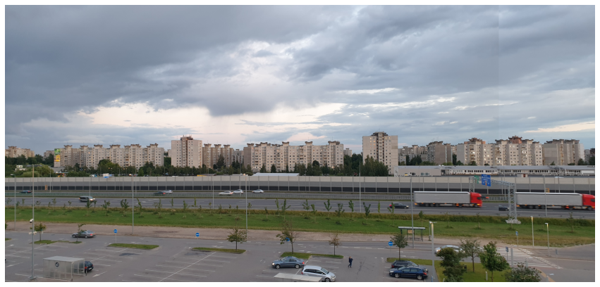
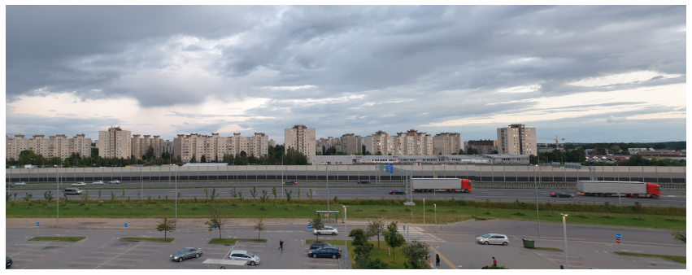
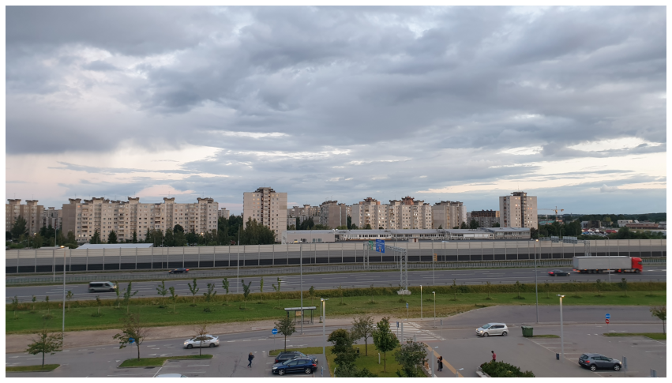
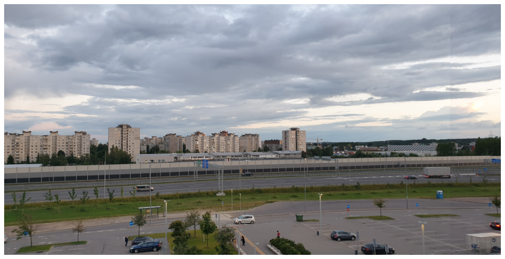
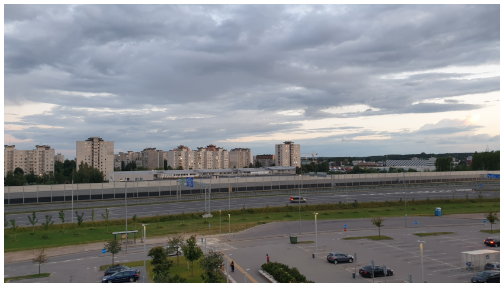
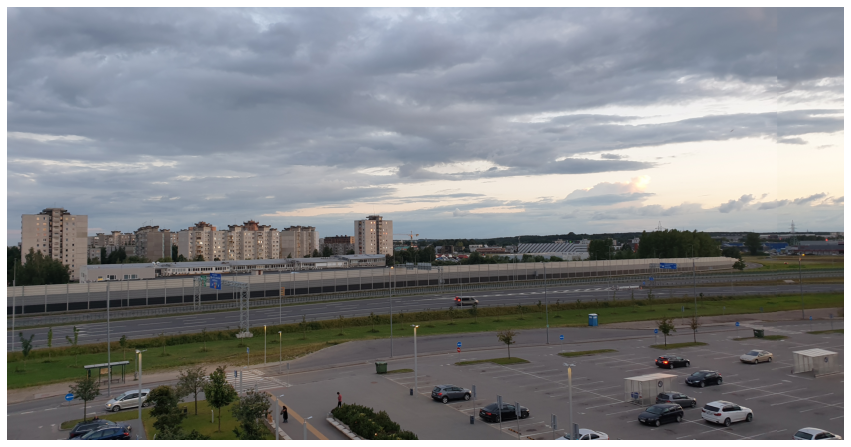

Code
import numpy as np
import matplotlib.pyplot as plt
import cv2
from pathlib import PathAugustas Macijauskas
July 9, 2022
In this notebook we will find that we can use knowledge of computer vision to create our own panoramas! We only need to take a few photos with a smartphone or camera, but we have to make sure that we only change the angle of the phone/camera, and not the position! This notebook then takes care of everything else.
Make sure the angles between photos are not too large since otherwise the algorithm can end up stretching some of the photos too much.
This notebook is based on the Computer Vision course by Andreas Geiger.
Let’s first import the some images that we want to stich together:
# Load images
images = sorted([f for f in PATH_TO_YOUR_IMAGES.iterdir()])
images = map(str, images)
images = map(cv2.imread, images)
images = [cv2.cvtColor(img, cv2.COLOR_BGR2RGB) for img in images]
len(images)10Let’s have a look at the images:
To estimate the homography matrix, we need correspondence pairs between images. The following is a function for this based on feature matching:
def get_keypoints(img1, img2):
orb = cv2.ORB_create(nfeatures=2000)
keypoints1, descriptors1 = orb.detectAndCompute(img1, None)
keypoints2, descriptors2 = orb.detectAndCompute(img2, None)
bf = cv2.BFMatcher_create(cv2.NORM_HAMMING)
# Find matching points
matches = bf.knnMatch(descriptors1, descriptors2, k=2)
good = []
for m, n in matches:
if m.distance < 0.5 * n.distance:
good.append(m)
p_source = np.float32([keypoints1[good_match.queryIdx].pt for good_match in good]).reshape(-1, 2)
p_target = np.float32([keypoints2[good_match.trainIdx].pt for good_match in good]).reshape(-1, 2)
N = p_source.shape[0]
p_source = np.concatenate([p_source, np.ones((N, 1))], axis=-1)
p_target = np.concatenate([p_target, np.ones((N, 1))], axis=-1)
return p_source, p_targetLet’s now look at some correspondence pairs. For this, the we use the draw_matches function:
def draw_matches(img1, points_source, img2, points_target):
''' Returns an image with matches drawn onto the images.
'''
r, c = img1.shape[:2]
r1, c1 = img2.shape[:2]
output_img = np.zeros((max([r, r1]), c + c1, 3), dtype='uint8')
output_img[:r, :c, :] = np.dstack([img1])
output_img[:r1, c:c + c1, :] = np.dstack([img2])
for p1, p2 in zip(points_source, points_target):
(x1, y1) = p1[:2]
(x2, y2) = p2[:2]
cv2.circle(output_img, (int(x1), int(y1)), 10, (0, 255, 255), 10)
cv2.circle(output_img, (int(x2) + c, int(y2)), 10, (0, 255, 255), 10)
cv2.line(output_img, (int(x1), int(y1)), (int(x2) + c, int(y2)), (0, 255, 255), 5)
return output_imgWe calculate the keypoints:
keypoint_pairs = [get_keypoints(img1, img2) for img1, img2 in zip(images[:-1], images[1:])]
source_points = [pair[0] for pair in keypoint_pairs]
target_points = [pair[1] for pair in keypoint_pairs]
len(source_points), len(target_points)(6, 6)Check how many keypoints we have:
(305, 3) (305, 3)
(188, 3) (188, 3)
(500, 3) (500, 3)
(482, 3) (482, 3)
(388, 3) (388, 3)
(476, 3) (476, 3)Visualise the keypoints:
After looking at the correspondences, let’s stitch the images together! In order to stitch together the images, we need a function to return the 2x9 homography matrix A_i matrix for a given 2D correspondence pair xi_vector and xi_prime_vector (which are 3D homogeneous vectors).
def get_Ai(xi_vector, xi_prime_vector):
''' Returns the A_i matrix discussed in the lecture for input vectors.
Args:
xi_vector (array): the x_i vector in homogeneous coordinates
xi_vector_prime (array): the x_i_prime vector in homogeneous coordinates
'''
assert xi_vector.shape == (3, ) and xi_prime_vector.shape == (3, )
Ai = np.zeros((2, 9))
Ai[0, 3:6] = -xi_prime_vector[2] * xi_vector
Ai[0, 6:9] = xi_prime_vector[1] * xi_vector
Ai[1, 0:3] = xi_prime_vector[2] * xi_vector
Ai[1, 6:9] = -xi_prime_vector[0] * xi_vector
assert(Ai.shape == (2, 9))
return AiUsing get_Ai, write a function get_A which returns the A matrix of size 2Nx9:
def get_A(points_source, points_target):
''' Returns the A matrix discussed in the lecture.
Args:
points_source (array): 3D homogeneous points from source image
points_target (array): 3D homogeneous points from target image
'''
N = points_source.shape[0]
# Insert your code here
A = np.vstack([
get_Ai(src, target) for src, target in zip(points_source, points_target)
])
assert(A.shape == (2*N, 9))
return ANext, implement the function get_homography which returns the homography H for point correspondence pairs. We obtain H by performing the Direct Linear Transformation (DLT) algorithm:
def get_homography(points_source, points_target):
''' Returns the homography H.
Args:
points_source (array): 3D homogeneous points from source image
points_target (array): 3D homogeneous points from target image
'''
# Insert your code here
A = get_A(points_source, points_target)
_, _, V_T = np.linalg.svd(A)
H = V_T.T[:, -1].reshape((3, 3))
assert H.shape == (3, 3)
return HWe need a function which takes in the two images and the calculated homography and it returns the stiched image in a format which we can display easy with matplotlib. This function is provided in the following.
def stitch_images(img1, img2, H):
''' Stitches together the images via given homography H.
Args:
img1 (array): image 1
img2 (array): image 2
H (array): homography
'''
rows1, cols1 = img1.shape[:2]
rows2, cols2 = img2.shape[:2]
list_of_points_1 = np.float32([[0,0], [0, rows1],[cols1, rows1], [cols1, 0]]).reshape(-1, 1, 2)
temp_points = np.float32([[0,0], [0,rows2], [cols2,rows2], [cols2,0]]).reshape(-1,1,2)
list_of_points_2 = cv2.perspectiveTransform(temp_points, H)
list_of_points = np.concatenate((list_of_points_1,list_of_points_2), axis=0)
[x_min, y_min] = np.int32(list_of_points.min(axis=0).ravel() - 0.5)
[x_max, y_max] = np.int32(list_of_points.max(axis=0).ravel() + 0.5)
translation_dist = [-x_min,-y_min]
H_translation = np.array([[1, 0, translation_dist[0]], [0, 1, translation_dist[1]], [0, 0, 1]])
H_final = H_translation.dot(H)
output_img = cv2.warpPerspective(img2, H_final, (x_max-x_min, y_max-y_min))
output_img[translation_dist[1]:rows1+translation_dist[1], translation_dist[0]:cols1+translation_dist[0]] = img1
output_img = output_img[translation_dist[1]:rows1+translation_dist[1]:, :]
# Find top and bottom rows
top_row = output_img.nonzero()[0].min()
bottom_row = output_img.nonzero()[0].max()
top_max = output_img[top_row, :].nonzero()[0].max()
bottom_max = output_img[bottom_row, :].nonzero()[0].max()
# Cut width
output_img = output_img[:, :min(top_max, bottom_max)]
return output_imgWith this, we can stitch two images together and see how it looks:
for img1, p_source, img2, p_target in zip(images[:-1], source_points, images[1:], target_points):
H = get_homography(p_target, p_source)
stitched_image = stitch_images(img1, img2, H)
fig = plt.figure(figsize=(15, 10))
plt.axis("off")
plt.imshow(stitched_image)
plt.show()





Finally, we repeat this process iteratively until all images are stitched together:
def get_panorama(images):
n_repeats = len(images) - 1
current_images = images
for _ in range(n_repeats):
new_images = []
keypoint_pairs = [get_keypoints(img1, img2) for img1, img2 in zip(current_images[:-1], current_images[1:])]
source_points = [pair[0] for pair in keypoint_pairs]
target_points = [pair[1] for pair in keypoint_pairs]
for img1, p_source, img2, p_target in zip(current_images[:-1], source_points, current_images[1:], target_points):
H = get_homography(p_target, p_source)
stitched_image = stitch_images(img1, img2, H)
new_images.append(stitched_image)
current_images = new_images
assert len(current_images) == 1
return current_images[0]That’s it! We now have a very basic panorama stitcher.
This approach is quite naive and I am sure that real-world algorithms to produce panoramas are much more sophisticated. Therefore, I am open to hear any feedback or suggestions that you may have!